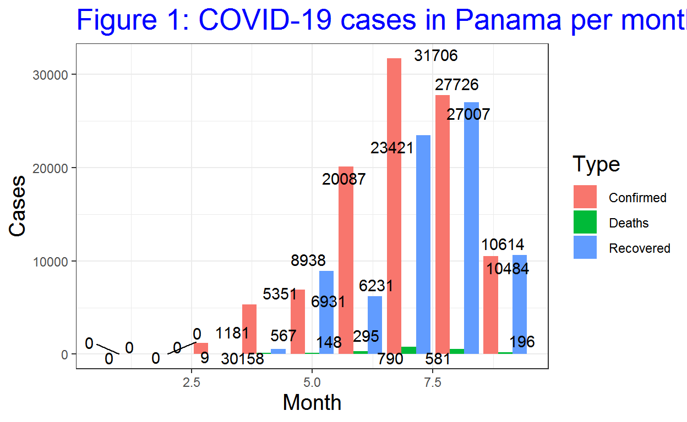

| Month | Confirmed | Deaths | Recovered |
|---|---|---|---|
| 1 | 0 | 0 | 0 |
| 2 | 0 | 0 | 0 |
| 3 | 1181 | 30 | 9 |
| 4 | 5351 | 158 | 567 |
| 5 | 6931 | 148 | 8938 |
| 6 | 20087 | 295 | 6231 |
| 7 | 31706 | 790 | 23421 |
| 8 | 27726 | 581 | 27007 |
| 9 | 10484 | 196 | 10614 |
Understand the situation of COVID-19 in Panama
After the confirmation by the World Health Organization (WHO) with a novel coronavirus which caused a respiratory illness in a cluster of people in Wuhan City, Hubei Province, China, COVID-19 became to spread in various of countries, including Panama. The virus was confirmed to have spread to Panama on 9 March 2020, and the country’s first death from the coronavirus was published on the next day (Staff 2020). The first case of someone testing positive in Panama described as relatively minor, stressing that the government seeks to be transparent about the spread of coronavirus and should take the strategies immediately. Panama is the second Central American country to record cases of the Covid-19 virus following Costa Rica, where 13 people tested positive, including three Americans. Therefore, the Panamanian government quickly ordered public and private schools closed until April 7 in the affected areas. The infected individuals belong to the 29-59 age group and had each recently travelled abroad (World 2020).
As shown in the Figure 1 and Table 1, Panama reported 103,466 cases of COVID-19, with 2,198 deaths, and 76,787 recoveries in total as of 16 September 2020. Through the trend presented in the Figure 2, the peak time of confirmation postive cases lied in July, as well as the deaths cases, and the peak time of recoveries contributed to August.

The interactive Figure 4 gave the exact day with the most cases in each month. Although the situation was better than the peak time in July, and the trend presented a decreasing pattern, Panama still needs to maintain the lockdown strategy and pay attention on every single case due to the serious condition with economy, health system, facilities and so on in Panama. The Republic of Panama has the second most unequally distributed wealth in Central America and has one of the largest testing rates per inhabitant in the region and consequently the highest incidence rate of COVID-19 (F 2020). 
Moreover, Panama has been among the largest and fastest-growing economies in Latin America over the past 25 years, the average growth rate over the last five years has been 4.6%. However, COVID-19 has dramatically changed all previous projections and trends.
The control of COVID-19 in Panama
Since April, Panama was taking a new measure to combat the spread of the novel coronavirus: separation of the sexes. Only women would be able to leave their homes to buy necessities on Monday, Wednesday and Friday, Men in Panama would be allowed to venture outside to run errands on Tuesday, Thursday and Saturday (Oppmann 2020). Those strategies taken by the government would be beneficial to Panama, and the positivity rate from COVID-19 has fallen below 15% for the first time in six-months reports the Ministry of Health. As the data shown in the Figure 4, Panama registered 9,850 confirmed cases, after a total of 66,919 tests applied, which gave a percentage of confirmed cases of 14.72%. Specialists say that Panama is entering the phase of overcoming the peak of the pandemic, and the figures for this month reveal that the virus is being controlled. In Figure 5, the first month of the pandemic in March, ended with 17% positivity, then in April it was 22.48%, May registered 18.74%, June 33.31%, July 34.38% and August 24.94% (MENAFN-NewsroomPanama 2020). That is absolutely a good sign, and hope everything will be fine as soon as possible, and everyone around the world can back to their normal life.
F, Alejandro Aleman. 2020. “Panama: Covid-19 hits the economy hard.†AFLR, July. https://www.iflr.com/article/b1mhc3br8hbxrx/panama-covid-19-hits-the-economy-hard.
MENAFN-NewsroomPanama. 2020. “Testing brings Panama nearer control of Covid-19.†MENAFN, September. https://menafn.com/1100812312/Testing-brings-Panama-nearer-control-of-Covid-19.
Oppmann, Patrick. 2020. “In Panama, coronavirus lockdown means separating men and women.†CW Sport, April. https://edition.cnn.com/2020/04/01/world/panama-coronavirus-sex-intl/index.html.
Staff, Reuters. 2020. “Panama reports first coronavirus death, seven more people infected.†REUTERS, March. https://www.straitstimes.com/world/americas/panama-records-central-americas-first-coronavirus-death.
World, The Straitstimes. 2020. “Panama records Central America’s first coronavirus death.†TS WORLD, March. https://tolonews.com/health/first-coronavirus-death-confirmed-afghanistan.